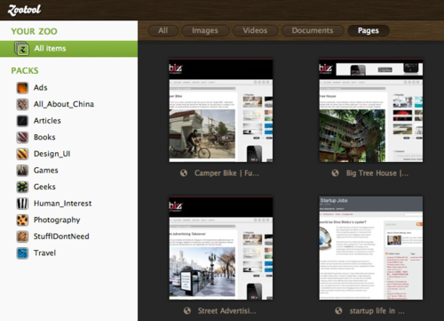

Tue, 26 Apr 2011 01:17:00 ·
Zootool - Bookmark and Share

For those who’ve longed for an alternative to the now discontinued Delicious.com, then Zootool, a made-in-Germany bookmarking web app, could be your answer.
Zootool sleek and easy to use UI design allows you to easily bookmark or likes anything you came across on the web, from photos, articles, video, etc and instantly share them amongst your friends. It’s almost like Twitter but for bookmarking with better organization based on topic and category of your choice.